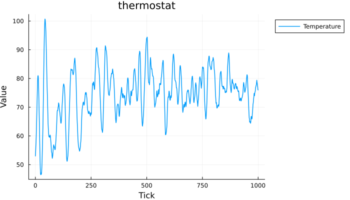
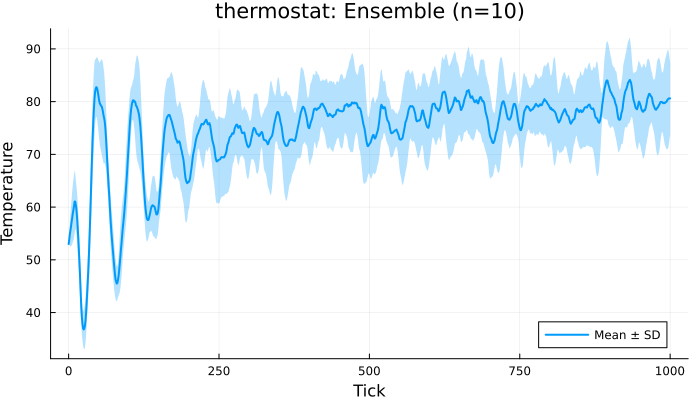
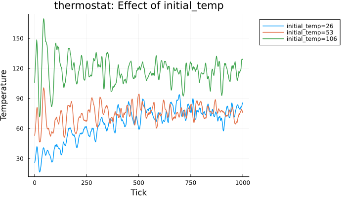

Thermostat
Overview
WHAT IS IT?
A thermostat is a device that responds to the temperature of a room in order to maintain the temperature at some desired level. This is often used as an example of feedback control, where a system adjusts its behavior in response the effects of its prior behavior. Generally speaking, heating systems have only two settings - on and off - and it is the job of the thermostat to turn the heater on and off at the appropriate times. A simple thermostat does this by switching the heater on when the temperature of the room has fallen below the set desired temperature, and switching the heater off once the desired temperature has been reached or exceeded.
HOW IT WORKS
In this model, the red turtles represent heat, and the yellow border demarcates the room whose temperature is being regulated. The yellow border is semi-permeable, allowing some of the heat that hits it to escape from the room. This heat disappears from the model once it reaches the edge of the world. A thermometer, indicated by the green square, measures the approximate temperature of the room (effectively, the density of red turtles). The heater is located in the center of the room, represented by a white patch.
It should be noted that use of turtles in this model to represent heat is not intended to be physically realistic. Instead, it is an example where a model is simplified in such a way so as to make another feature of the model more salient. In this case, it is the regulating function of the thermostat that we are primarily concerned with.
THINGS TO NOTICE
With some settings, the room cannot be heated to the desired temperature (for example, the room attains a maximum temperature that is lower than the desired temperature). Under what circumstances does this happen?
Look at the plot: does the thermostat do a good job of keeping the temperature at the desired level? If we hold the variables constant, to what factors can we attribute fluctuations of the temperature (in red) over the desired temperature (in green)?
Try adjusting the insulation of the room and the strength of the heater. Do these factors affect the efficiency of the thermostat (i.e. cause the temperature to stay closer or further from the desired temperature)?
Notice that there is a delay from the time the heater is turned on to the time when this added heat reached the thermometer. What are the consequences of this delay?
EXTENDING THE MODEL
The thermostat in this model uses a very simple rule to control the heater based on the temperature. It might be possible to improve the performance of this system by making it ‘smarter’. One suggestion is to write a control program that turns the heater on and off before the temperature hits the desired temperature — this would compensate for the delay mentioned above. Try rewriting the function THERMO-CONTROL. Keep in mind that the only inputs your control function should have are GOAL-TEMP and TEMPERATURE, and the only action should be to either call RUN-HEATER or not. Notice this leaves open the possibility of creating variables to store past information.
Much of observed instability in the temperature might simply be attributed to the thermometer that we are using. The current thermometer takes an average of the number of turtles occupying the green patches over the past ten ticks. Why do you suppose we are measuring the temperature in such a way, instead of simply counting the number of turtles inside the room? Can you design a better thermometer?
This model doesn’t account for how the outside temperature (outside the yellow box) could effect the inside temperature. Alter the model so that this now becomes a factor.
The heater in this model puts out heat at a fixed rate, regardless of how long it has been on. Real heaters generally have a warm up period during which time they slowly increase their output, until they reach their maximum rate. Try adjusting the heater in this model to act more like a real heater. How does this affect the behavior or efficiency of the thermostat? How might we alter THERMO-CONTROL to account for this?
Begin a simulation with INITIAL-TEMP set to zero, and notice how long it takes to heat up the room. This means that if we wanted to warm the room up at a certain time it might make sense to turn the heater on beforehand. Introduce time into this model, and try adjusting the thermostat so that it heats the room according to some schedule.
HOW TO CITE
If you mention this model or the NetLogo software in a publication, we ask that you include the citations below.
For the model itself:
- Wilensky, U. (1998). NetLogo Thermostat model. http://ccl.northwestern.edu/netlogo/models/Thermostat. Center for Connected Learning and Computer-Based Modeling, Northwestern University, Evanston, IL.
Please cite the NetLogo software as:
- Wilensky, U. (1999). NetLogo. http://ccl.northwestern.edu/netlogo/. Center for Connected Learning and Computer-Based Modeling, Northwestern University, Evanston, IL.
COPYRIGHT AND LICENSE
Copyright 1998 Uri Wilensky.

This model is licensed under the Creative Commons Attribution-NonCommercial-ShareAlike 3.0 License. To view a copy of this license, visit https://creativecommons.org/licenses/by-nc-sa/3.0/ or send a letter to Creative Commons, 559 Nathan Abbott Way, Stanford, California 94305, USA.
NetLogo itself is free software for non-commercial use under the terms of the GNU General Public License (see full license information here).
To inquire about commercial licenses for either NetLogo or specific models from the models library, please contact netlogo-commercial-admin@ccl.northwestern.edu.
This model was created as part of the project: CONNECTED MATHEMATICS: MAKING SENSE OF COMPLEX PHENOMENA THROUGH BUILDING OBJECT-BASED PARALLEL MODELS (OBPML). The project gratefully acknowledges the support of the National Science Foundation (Applications of Advanced Technologies Program) – grant numbers RED #9552950 and REC #9632612.
This model was converted to NetLogo as part of the projects: PARTICIPATORY SIMULATIONS: NETWORK-BASED DESIGN FOR SYSTEMS LEARNING IN CLASSROOMS and/or INTEGRATED SIMULATION AND MODELING ENVIRONMENT. The project gratefully acknowledges the support of the National Science Foundation (REPP & ROLE programs) – grant numbers REC #9814682 and REC-0126227. Converted from StarLogoT to NetLogo, 2001.
Parameters
| Parameter | Type | Default | Description |
|---|---|---|---|
initial_temp | Int | 53 | initial temp |
goal_temp | Int | 67 | goal temp |
heater_strength | Int | 4 | heater strength |
insulation | Int | 50 | insulation |
grid_width | Int | 71 | grid width |
grid_height | Int | 71 | grid height |
min_cor | Int | -35 | min-pxcor = min-pycor |
max_cor | Int | 35 | max-pxcor = max-pycor |
max_ticks | Int | 1000 | max ticks |
Source Code
The Julia code to run this model:
using ArkModelZoo
_, trajectory = run_thermostat()Time Series

Ensemble Runs
Ten replicates with different random seeds, showing mean ± standard deviation.

Parameter Sensitivity
Varying initial_temp.

Appendix: Source Code
This model is implemented in the Ark.jl Entity-Component-System (ECS) framework. The code is split into five files, each with a distinct role:
- Parameters: a mutable struct holding all configurable values.
- Components: lightweight data types attached to individual entities (agents).
- Resources: world-level shared state accessible to all systems.
- Systems: functions that operate on entities each tick, defining model behavior.
- Model: wiring that assembles the world, registers resources and systems, and provides the run entry point.
Parameters (parameters.jl)
The parameter struct uses @kwdef so that every field has a default value and can be overridden by keyword. These defaults match the original NetLogo model’s slider settings.
Base.@kwdef mutable struct ThermostatParams
initial_temp::Int = 53
goal_temp::Int = 67
heater_strength::Int = 4
insulation::Int = 50
grid_width::Int = 71
grid_height::Int = 71
min_cor::Int = -35 # min-pxcor = min-pycor
max_cor::Int = 35 # max-pxcor = max-pycor
max_ticks::Int = 1000
seed::Int = 42
endComponents (components.jl)
Components are lightweight data types attached to individual entities (agents). Mutable structs hold per-entity state, while empty tag structs act as markers for the ECS query system to efficiently filter entities.
# Heat particle position (continuous, non-wrapping world)
mutable struct ThermoPosition
x::Float64
y::Float64
end
# Persistent heading (degrees, 0=north, clockwise)
mutable struct ThermoHeading
angle::Float64
endResources (resources.jl)
Resources are world-level singletons shared across all systems, used for global state and aggregate statistics.
# Patch type grid: 0=interior, 1=wall(yellow), 2=thermometer(green)
mutable struct ThermoGrid
width::Int # 71
height::Int # 71
min_cor::Int # -35 (min patch coordinate)
cells::Matrix{Int8}
end
function ThermoGrid(width::Int, height::Int, min_cor::Int)
ThermoGrid(width, height, min_cor, zeros(Int8, width, height))
end
mutable struct ThermoStats
temperature::Float64
temperatures::Vector{Float64} # rolling window of 10 readings
end
ThermoStats() = ThermoStats(0.0, Float64[])Systems (systems.jl)
Systems contain the model logic and execute in a defined order each tick. Each system struct implements either initialize! (run once at setup) or update! (run every tick).
const THERMO_INTERIOR = Int8(0)
const THERMO_WALL = Int8(1)
const THERMO_GREEN = Int8(2)
# --- Grid helpers ---
# Convert continuous position to patch coordinate (NetLogo round-to-nearest)
_thermo_patch(v::Float64) = round(Int, v)
# Convert patch coordinate to 1-based grid index
_thermo_idx(pc::Int, min_cor::Int) = pc - min_cor + 1
# Check if patch (px,py) is inside the grid
function _thermo_in_bounds(px::Int, py::Int, min_cor::Int, max_cor::Int)
return min_cor <= px <= max_cor && min_cor <= py <= max_cor
end
# Get patch type at continuous position
function _thermo_ptype(grid::ThermoGrid, x::Float64, y::Float64)
px = _thermo_patch(x)
py = _thermo_patch(y)
if !_thermo_in_bounds(px, py, grid.min_cor, grid.min_cor + grid.width - 1)
return THERMO_WALL # out of bounds treated as wall
end
ix = _thermo_idx(px, grid.min_cor)
iy = _thermo_idx(py, grid.min_cor)
return grid.cells[ix, iy]
end
# --- Initialization ---
struct InitThermoSystem <: System end
function initialize!(::InitThermoSystem, world::World)
params = get_resource(world, ThermostatParams)
rng = get_resource(world, RNGResource).rng
grid = get_resource(world, ThermoGrid)
stats = get_resource(world, ThermoStats)
min_c = params.min_cor
max_c = params.max_cor
# Wall boundary at ±(max_cor - 7) = ±28
wall_bound = max_c - 7 # 28
# Set up grid patch types
for px in min_c:max_c, py in min_c:max_c
ix = _thermo_idx(px, min_c)
iy = _thermo_idx(py, min_c)
if abs(px) >= wall_bound || abs(py) >= wall_bound
grid.cells[ix, iy] = THERMO_WALL
elseif abs(px) < 5 && py > (max_c - 25) && py < (max_c - 15)
# Thermometer: |x|<5 and 10<y<20 → py in 11..19
grid.cells[ix, iy] = THERMO_GREEN
else
grid.cells[ix, iy] = THERMO_INTERIOR
end
end
# Initial temperature readings
stats.temperatures = fill(Float64(params.initial_temp), 10)
stats.temperature = Float64(params.initial_temp)
# Create initial heat particles at origin with random heading, fd random-float 27
w = params.grid_width
move_dist_max = Float64(max_c - 8) # 27.0
n_initial = round(Int, params.initial_temp * ((w - 16)^2 / 81.0))
for _ in 1:n_initial
heading = Float64(rand(rng, 0:359))
dist = rand(rng) * move_dist_max
θ = deg2rad(heading)
x = sin(θ) * dist
y = cos(θ) * dist
new_entity!(world, (ThermoPosition(x, y), ThermoHeading(heading)))
end
return nothing
end
# --- Circulation ---
# NetLogo: if pcolor=yellow and random-float insulation > 1 → redirect.
# Then fd 1. If not can-move? 1 → die.
mutable struct ThermoCirculateSystem <: System
to_remove::Vector{Entity}
end
ThermoCirculateSystem() = ThermoCirculateSystem(Entity[])
function update!(system::ThermoCirculateSystem, world::World)
params = get_resource(world, ThermostatParams)
rng = get_resource(world, RNGResource).rng
grid = get_resource(world, ThermoGrid)
min_c = params.min_cor
max_c = params.max_cor
w = params.grid_width
half_world = Float64(max_c) + 0.5 # 35.5
# facexy target ranges
face_xrange = Float64(w - 13) # 58.0
face_yrange = Float64(w - 14) # 57.0
face_offset = Float64(max_c - 6) # 29.0
empty!(system.to_remove)
for (eids, positions, headings) in Query(world, (ThermoPosition, ThermoHeading))
@inbounds for i in eachindex(positions)
x = positions[i].x
y = positions[i].y
ptype = _thermo_ptype(grid, x, y)
# On wall patch: chance to redirect toward interior
if ptype == THERMO_WALL
if rand(rng) * params.insulation > 1.0
# facexy random interior point
tx = rand(rng) * face_xrange - face_offset
ty = rand(rng) * face_yrange - face_offset
dx = tx - x
dy = ty - y
headings[i].angle = atand(dx, dy) # NetLogo heading convention
end
end
# fd 1
θ = deg2rad(headings[i].angle)
nx = x + sin(θ)
ny = y + cos(θ)
positions[i].x = nx
positions[i].y = ny
# can-move? 1 check: would next step go out of world?
check_x = nx + sin(θ)
check_y = ny + cos(θ)
if check_x < -half_world || check_x > half_world ||
check_y < -half_world || check_y > half_world
push!(system.to_remove, eids[i])
end
end
end
for e in system.to_remove
is_alive(world, e) && remove_entity!(world, e)
end
return nothing
end
# --- Temperature measurement ---
struct ThermoTemperatureSystem <: System end
function update!(::ThermoTemperatureSystem, world::World)
grid = get_resource(world, ThermoGrid)
stats = get_resource(world, ThermoStats)
# Count particles on green (thermometer) patches
count_green = 0
for (_, positions) in Query(world, (ThermoPosition,))
@inbounds for i in eachindex(positions)
if _thermo_ptype(grid, positions[i].x, positions[i].y) == THERMO_GREEN
count_green += 1
end
end
end
# Update rolling temperature: but-last fput count temperatures
pop!(stats.temperatures)
pushfirst!(stats.temperatures, Float64(count_green))
stats.temperature = sum(stats.temperatures) / length(stats.temperatures)
return nothing
end
# --- Heater control ---
struct ThermoHeaterSystem <: System end
function update!(::ThermoHeaterSystem, world::World)
params = get_resource(world, ThermostatParams)
rng = get_resource(world, RNGResource).rng
stats = get_resource(world, ThermoStats)
if stats.temperature < params.goal_temp
# Create heater_strength new particles at origin with random heading
for _ in 1:params.heater_strength
heading = Float64(rand(rng, 0:359))
new_entity!(world, (ThermoPosition(0.0, 0.0), ThermoHeading(heading)))
end
end
return nothing
end
# --- Stats (temperature already computed) ---
struct ThermoStatsSystem <: System end
function update!(::ThermoStatsSystem, world::World)
return nothing
end
# --- Termination ---
struct ThermoTerminationSystem <: System end
function update!(::ThermoTerminationSystem, world::World)
params = get_resource(world, ThermostatParams)
tick = get_resource(world, Tick)
if tick.tick + 1 >= params.max_ticks
get_resource(world, Terminate).stop = true
end
return nothing
endModel (model.jl)
The model file assembles all pieces: it creates the ECS World with the required component types, registers resources, builds the Scheduler with systems in execution order, and exposes the public run entry point. The observer pattern records the trajectory each tick.
function thermostat_world(; initial_capacity::Int = 4096)
return World(
ThermoPosition,
ThermoHeading;
initial_capacity = initial_capacity,
allow_mutable = true,
)
end
function thermostat_systems()
return (
InitThermoSystem(),
ThermoCirculateSystem(),
ThermoTemperatureSystem(),
ThermoHeaterSystem(),
ThermoStatsSystem(),
ThermoTerminationSystem(),
)
end
function thermostat_model(params::ThermostatParams = ThermostatParams())
world = thermostat_world()
_add_standard_resources!(world, params)
add_resource!(world, ThermoGrid(params.grid_width, params.grid_height, params.min_cor))
add_resource!(world, ThermoStats())
scheduler = Scheduler(world, thermostat_systems())
initialize!(scheduler)
return scheduler
end
struct ThermostatObserver end
function thermostat_headers(::ThermostatObserver)
return ["Temperature"]
end
function thermostat_values(::ThermostatObserver, world::World)
stats = get_resource(world, ThermoStats)
return Float64[stats.temperature]
end
function run_thermostat(; params::ThermostatParams = ThermostatParams(), observe::Bool = true)
return _run_model(thermostat_model, ThermostatObserver(), thermostat_values; params, observe)
end